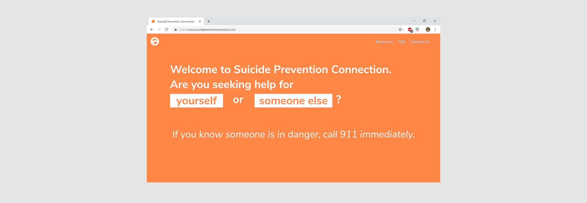

Overview
At StarterHacks this year, my teammates (Catherine and Nita, both developers) and I were inspired by the prompt, “How can we eliminate long wait lines for suicide hotlines?” We had 24 hours to find and develop a way to solve this problem.
Process
We decided who the possible people who would use our website would be. Our primary users
would be people who were suicidal and friend/family of those people. Our secondary users would
be the people working for the hotlines. Because of our limited time, we were unable to conduct primary research — call centers
were closed and we were unable to find mental health mentors to interview and gain feedback from. These limitations
led us to begin drawing a diagram with everything that we knew about suicide hotlines and
the possible solutions that we could use:
One of the solutions we came up with was using an AI bot, which would eliminate hotline wait lines. However, this
idea felt too impersonal. After ruling out several more options, we decided to create a website that would direct visitors
to the most available suicide chat hotlines at that time, by either the number of spaces that are open or the shortest wait line.
I wanted the website to be as minimal as possible to have a single focus on the main purpose of the website — to direct visitors to
a hotline as quickly as possible.

For the home page, I created a slightly different experience for both of our primary users: people calling for
themselves, people calling for other people. Clicking on the "yourself" and "someone else" buttons would lead to
slightly different forms, with the same content but different wording. After researching other suicide hotlines, we
decided to include the last sentence about calling 911 for emergencies to save time if there happened to be an urgent situation.
I kept the form as simple as possible to minimize the amount of time it would take to get to a hotline.
The radio buttons on the bottom under "services" are pre-populated to allow the maximum possible spots to be open,
with the ability for the visitor to uncheck any services for any reason, such as having a poor experience with one beforehand.
Clicking the "Connect with a service now" button leads to a loading page while calculating the most available hotline...
...before bringing the visitor directly to the chat page.
After creating this mockup, Catherine used HTML to recreate the design. Everything was put together after Nita
finished coding a random number generator in C++ to see if the website would redirect to the most available website correctly.
Next Steps
While reviewing what we accomplished after 24 hours, thought of several actions we could take to improve the website:
- Creating a more engaging distraction or animation to replace the loading page
- Testing the website with people and live data
- Adding more resources and information onto the website and streamlining the UI
Low Fidelity Prototype
Scroll and click around!